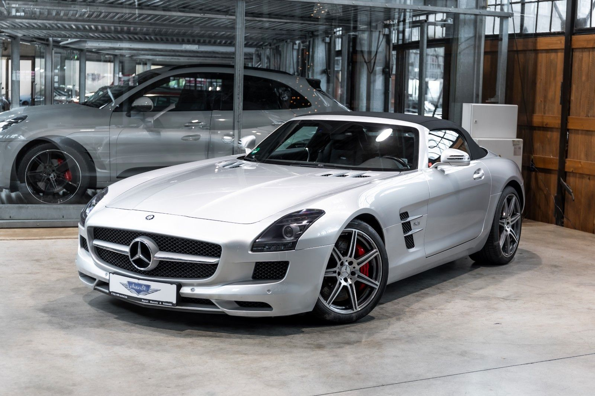

Mercedes-Benz SLS AMG (код кузова — C197) — это заднеприводное двухместное спортивное купе, официальный дебют которого состоялся в 2009 году на автосалоне во Франкфурте. В продажу автомобиль поступил в 2010 году по цене около 175 000 евро. По своей сути, этот суперкар является преемником Mercedes-Benz SLR McLaren.
Автомобиль стал идеологическим наследником классического Mercedes-Benz 300SL, переняв у него легендарные двери типа «крыло чайки», которые в случае переворота на крышу отстреливаются специальными пиропатронами.
Спорткар оснащен 6,2-литровым двигателем V8 (индекс M159). Он основан на алюминиевом блоке M156, однако инженеры AMG литые поршни заменили на кованые, а также заново спроектировали системы впуска и выпуска. Двигатель агрегатируется с роботизированной семиступенчатой коробкой передач с двумя сцеплениями от фирмы Getrag.
От классического «мерседесовского» автомата отказались ради идеальной развесовки 47:53 по схеме transaxle.
За время производства инженеры Mercedes-Benz не стояли на месте и разработали несколько уникальных модификаций базовой модели: